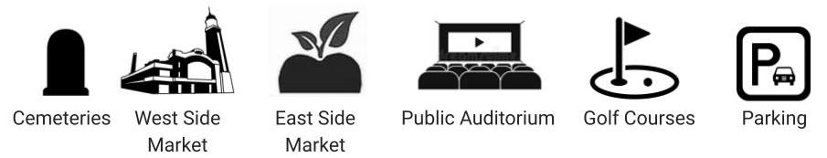
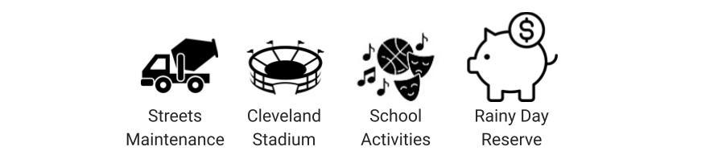

There are two funds that spend money on *infrastructure: *We are defining infrastructure as roads and buildings.
The first is the Small Enterprise Fund which pays for the public spaces aka- enterprises. The Small Enterprise Fund specifically covers:
Unlike the General Fund, the services in this fund are mostly paid for by user fees, such as when you pay for public parking. In times when user fees aren't enough to cover all expenses, some money is transferred from the General Fund.
This fund is a bit tricky to understand, because the Special Revenue Fund is collection of four restricted funds. Sometimes when we collect taxes, we restrict where that all or some of that money can be spent. This is a restricted fund. In this case, the funds within the Special Revenue fund is restricted to capital improvements and debt. Capital improvements is a fancy way of saying any improvements done to city property. To be specific, this fund is used to:
The chart shows two of Cleveland's funds: the Small Enterprise fund (in pink) and the Special Revenue fund (in orange). Like it's bigger counterpart on the utilites page, the Small Enterprise is mostly paid for by user fees. Each department here largely pays for itself with revenues from the previous year. That is why the pink section up top looks fairly symmetrical. The bottom half in orange, the Special Revenue Fund, is different. It is made up of 4 restricted funds, each with their own sources of income and rules for fund spending.
Investment is underway to increase tree plantings throughout the city with an aim of restoring the city’s tree canopy. Legislation has existed since 2018 to protect existing trees, though the degree to which this legislation has been enforced is questionable.
Additionally, these aggressive goals are sometimes at odds with City contractors’ propensity to destroy or remove mature shade trees for utility work and sidewalk repair. Removal of existing mature trees tends to reduce the effectiveness of the commitment to spend $10M to restore the tree canopy which, according to the 2019 Urban Tree Canopy Assessment, is in a dire state.
Hopefully initiatives like the Cleveland Tree Coalition and Healthy Urban Tree Canopy Grant Program are able to harness this support for green investment and honor “the Forest City.”
In recent years, the West Side Market has experienced significant attention focusing on vendor complaints about neglectful City management, deferred maintenance, and a general climate that is not conducive to their businesses succeeding. Recently, the City announced hiring of a consultant to evaluate market operations, while some vendors continue to call for management of the market to be handed over to a nonprofit entity.
How does current market funding stack up against other facilities? The West Side Market currently receives approximately $1.6M annually. Municipal parking facilities receive $10.6M annually while Public Auditorium and cemeteries receive $2.9M and $1.7M, respectively. Most of these facilities also have commensurate revenues, as seen above. Funding for the West Side Market is about 15.6% of current municipal parking revenues.
Beyond just repairing and maintaining streets, what other initiatives are underway? The Cuyahoga County Greenways Plan and the City of Cleveland’s Complete and Green Streets Ordinance outline standards for incorporating pedestrian, biking, and sustainable infrastructure when performing street work. More recently, Vision Zero aims to eliminate all traffic fatalities and severe injuries while enhancing safety.
Proposed and partially-funded projects such as the Midway and the Lorain Avenue Cycle Track present new concepts for Cleveland - fully protected bike lanes. Protected bike lanes fully separate bikes and vehicles, allowing for maximized safety for bicycles. The full Midway proposal can be thought of as a true bicycle highway network. Initial estimates projected a full, 100-mile network could cost anywhere from $40M to $150M. What are some projections for different versions of this project and how do those financing needs compare to the current budget?
was the average cost per mile
was the total cost
of the current annual street construction budget would be required to fully build this network in 10 years
of simple protected bike lanes
will be the total project cost
of the current annual street construction budget would be required to fully build this network in the next 10 years
The Federal Highway Authority states that bike lanes can be constructed for as low as $5,000 per mile or as high as $50,000 per mile, depending on the condition of the streets. We all know Cleveland has some very difficult streets, so let's assume an average cost of $27,500 per mile.
We don't need a bike lane on every single street, so the above estimate is greater than what is really necessary. However, it's plausible to call for adequate bike lanes throughout the city - the cost is pretty minor when compared to many other budget items!
Thankfully, Cleveland doesn’t have to go at it alone when constructing some of these projects. With the assistance of the Northeast Ohio Areawide Coordinating Authority (NOACA), there is some financial support for the first segments of the Midway project. In 2017 NOACA dedicated $14.4M to cycle tracks on Superior Avenue and Lorain Avenue with construction projected to begin in 2020. Construction has yet to begin on these projects.
Obviously road maintenance is critical, and Cleveland already has a road maintenance backlog. In 2016 it was estimated that the City had a need of $300M for full, immediate road resurfacing - that’s almost the size of the entire Public Safety budget or about 181 West Side Markets! For comparison, the current street construction budget is only equivalent to about 10% of the Public Safety budget. It's worth noting that in 2018, NOACA's projected backlog estimated a 5-year total requirement of under $145M.